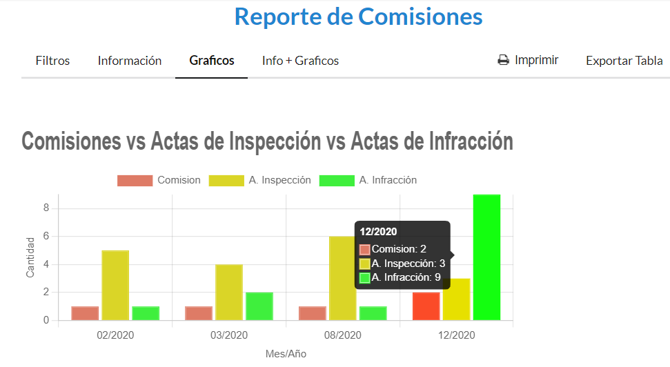

Reportes
Cómo generar los reportes
Desde el panel principal, podremos ingresar a la opción Reporte de Comisiones - Reporte de de Gestión de Permiso - Reporte de Recaudación.
Reporte de Comisiones
Al seleccionar Reporte de Comisiones, elejimos los filtros disponibles y luego presionamos el botón Generar
Y nos mostrará la siguiente información
Luego podremos verlo de forma grafica desde la solapa Graficos
También podremos ver toda ésta información Informacion + Graficos desde Info+Graficos
El reporte se podrá imprimir y exportar desde las opciones
Reporte de Gestión de Permiso
Al seleccionar Reporte de Gestión de Permiso, elejimos los filtros disponibles y luego presionamos el botón Generar
Y nos mostrará la siguiente información
Luego podremos verlo de forma grafica desde la solapa Graficos
También podremos ver toda ésta información Informacion + Graficos desde Info+Graficos
El reporte se podrá imprimir y exportar desde las opciones
Reporte de Recaudación
Al seleccionar Reporte de Recaudación, podremos seleccionar el tipo de Reporte de Recaudación desde las solapas
Tipos de Permisos: Si seleccionamos la solapa Tipos de Permisos nos mostrará la siguiente información
elejimos los filtros disponibles y luego presionamos el botón Generar
Series Temporales: Si seleccionamos la solapa Series Temporales nos mostrará la siguiente información
Luego podremos verlo de forma grafica desde la solapa Graficos

También podremos ver toda ésta información Informacion + Graficos desde Info+Graficos
El reporte se podrá imprimir y exportar desde las opciones
Proyección por Valores Módulos: Si seleccionamos la solapa Proyección por Valores Módulos nos mostrará la siguiente información
Luego podremos verlo de forma grafica desde la solapa Graficos
También podremos ver toda ésta información Informacion + Graficos desde Info+Graficos
El reporte se podrá imprimir y exportar desde las opciones